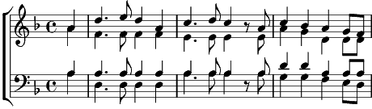

1. Après l'étable, après la croix,
Fais-nous, Seigneur, partager ta joie, (bis)
Partager, au matin, le bâton pour la route
Et se rompre le pain à l'heure du casse-croûte.
Partager, partager !
Echanger les fumées qui ne sont pas les mêmes,
Mêmes grains que l'on sème, pour le riz, pour le pain
Ta planète est la mienne, échanger
2. Après l'étable, après la croix,
Fais-nous, Seigneur, partager ta joie, (bis)
Partager la maison quand la place est petite,
Oublier la raison quand l'amour est en fuite,
Partager, partager !
Echanger les idées qui ne sont pas les mêmes
Dire avant que je t'aime :
"Va, je ne te hais point !
Pour mieux dire que je t'aime, échanger !
3. Après l'étable, après la croix,
Fais-nous, Seigneur, partager ta joie (bis)
Coda:
Partager cet amour qu'on redoute de vivre,
S'en aller tout autour où est la joie de suivre
Un amour partagé.